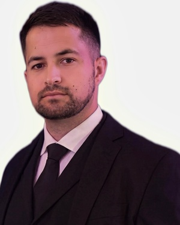

I am a Ph.D. student in Computer Science and Engineering at Louisiana State University, advised by Prof. Elias Bou-Harb. My research focuses on trustworthy machine learning for industrial control system security, with an emphasis on anomaly detection, conformal prediction, uncertainty quantification, and deployment realistic evaluation.
My work studies why deep learning based intrusion detectors that perform well on benchmarks often fail in real deployment. I develop methods that make these systems more reliable, interpretable, and operationally useful for critical infrastructure, including water treatment systems, industrial networks, and connected vehicles.

I study how deep learning anomaly detectors fail after deployment when static alarm thresholds are calibrated on historical benign data and transferred to new operating regimes. My work develops adaptive calibration methods based on conformal prediction that update thresholds online while keeping the upstream detector fixed.
I develop conformal prediction methods that add calibrated uncertainty intervals to industrial forecasting services. This allows operators to reason about forecast reliability, violation budgets, and operational risk.
I model industrial control systems using their natural Purdue hierarchy. This work uses combinatorial complexes and topological neural networks to preserve devices, interactions, and PLC control zones during intrusion detection.
I design attribution methods that capture interactions between sensors and actuators in water treatment systems, improving the ability of operators to identify likely causes of attacks.
My current CV is available here: CV PDF.